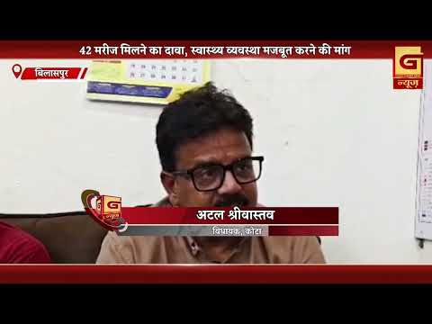
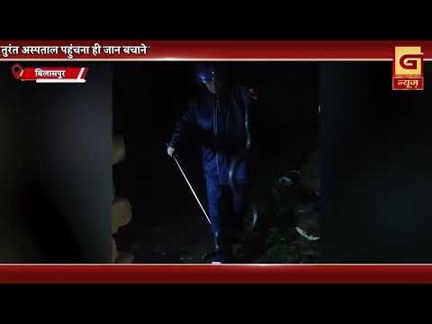
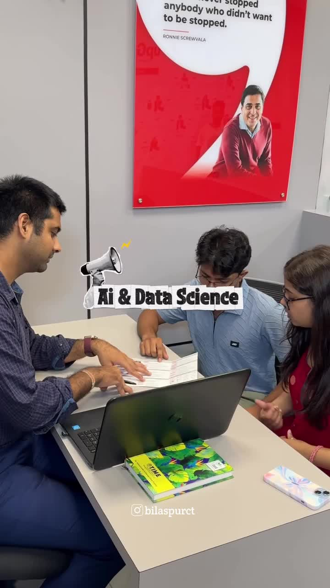
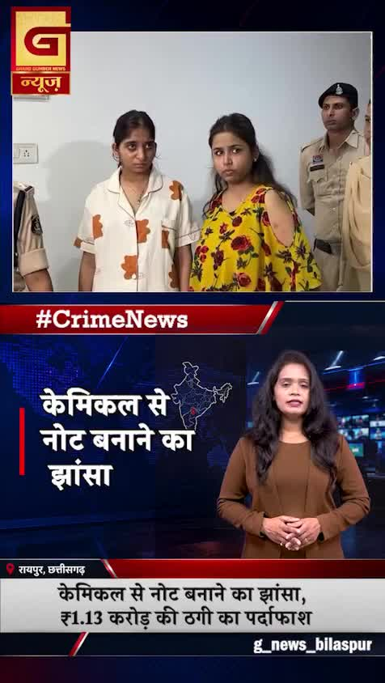
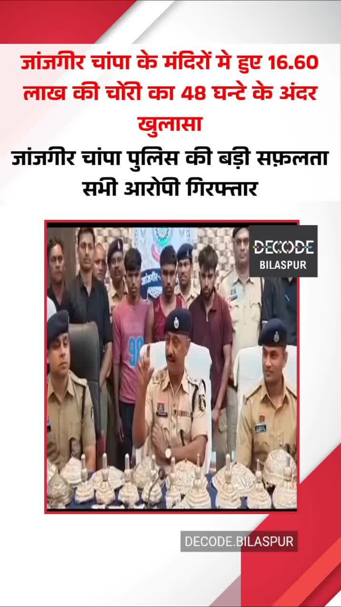
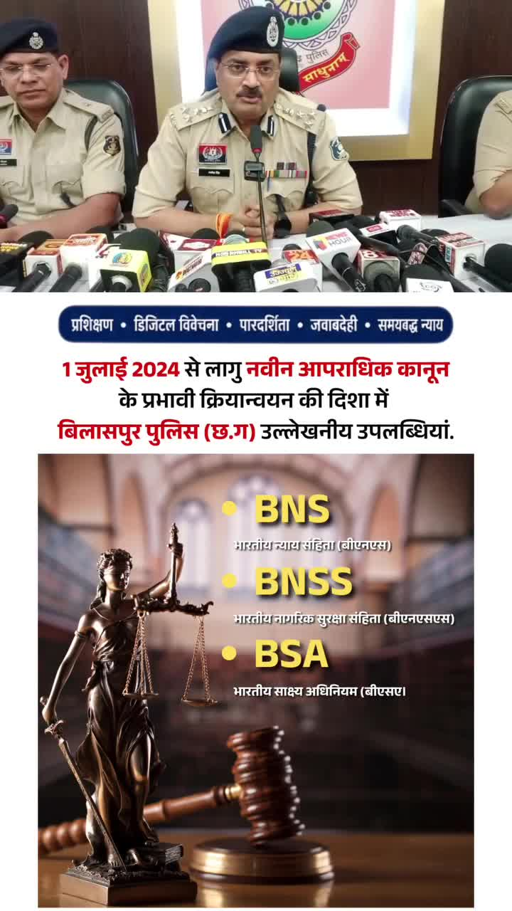

Bilaspur News Hub
1
BUSINESS
2
EDUCATION
12
GOVERNMENT
4
HEALTH
15
INSTAGRAM NEWS
8
NEWS
1
OTHER
12
POLICE
1
RAILWAY
4
SOCIAL
9
YOUTUBE VIDEOS
BUSINESS1

The Hitavada · Scraped: 2026-08-06 08:18:34
पहली तिमाही 2026-27 में बिलासपुर का संपत्ति कर संग्रह 100 करोड़ रुपये से अधिक हो गया, जो मजबूत राजस्व प्रदर्शन को दर्शाता है। यह वृद्धि बेहतर कर प्रशासन और अधिक अनुपालन को दर्शाती है।
EDUCATION2

Lokswar · Published: Thu, 06 Au | Scraped: 2026-08-06 08:18:34
At Government Higher Secondary School Chunchnia, 45 girls received free bicycles and textbooks to support their education. The distribution was accompanied by a tree planting drive to promote environmental awareness.

The Hitavada · Scraped: 2026-08-06 08:18:34
Student protests in Jharkhand have escalated with five more participants joining a hunger strike, demanding their rights. The growing movement highlights grievances over educational policies, pressuring authorities to act.
GOVERNMENT12

BREAKINGFormer CGPSC secretary bail rejected over paper leak / पूर्व सचिव की जमानत खारिज, पेपर लीक मामले में
Nai Dunia Bilaspur · Published: Wed, 05 Au | Scraped: 2026-08-05 13:38:55
A court has denied bail to a former CGPSC secretary accused of leaking exam papers, calling it a crime worse than murder. The judge warned that tampering with millions of youths' futures cannot be tolerated.

Lokswar · Published: Wed, 05 Au | Scraped: 2026-08-05 13:38:55
DG Jail Himanshu Gupta conducted a surprise inspection of Bilaspur Central Jail, reviewing infrastructure and announcing new modern facilities for inmates. The visit aimed to ensure better rehabilitation and security standards.

Lokswar · Published: Wed, 05 Au | Scraped: 2026-08-05 13:38:55
The district administration held a meeting to strengthen law and order. Collector and Superintendent of Police directed strict enforcement to maintain peace and security.

Lokswar · Published: Wed, 05 Au | Scraped: 2026-08-05 13:38:55
A cabinet meeting chaired by CM Vishnu Deo Sai took key decisions. Details of the announcements were released to the public.

CG Wall · Published: Wed, 05 Au | Scraped: 2026-08-05 17:27:18
Congress leader Ramgopal Agarwal failed to obtain bail in the high-profile coal levy and liquor scam cases after surrendering three years ago. The court denied relief, keeping him in custody as investigations continue, keeping the case in political spotlight.

Nai Dunia Bilaspur · Published: Thu, 06 Au | Scraped: 2026-08-06 08:18:34
छत्तीसगढ़ हाई कोर्ट ने फैसला सुनाया कि शादी के बाद भी बेटी का अपने माता-पिता के साथ संबंध बना रहता है और उसे अनुकंपा नियुक्ति से वंचित करना असंवैधानिक है। यह फैसला महिलाओं के अधिकारों और विरासत की सुरक्षा को मजबूत करता है।
The Hitavada · Scraped: 2026-08-06 08:18:34
Iran and Oman are collaborating on a plan to reopen the Strait of Hormuz, aiming to ease regional tensions and restore vital oil shipping routes. Diplomatic efforts are underway to implement the agreement.
The Hitavada · Scraped: 2026-08-06 08:18:34
The Maharashtra FDA raided and seized unsafe food items worth Rs 56 crore over two months, suspending 165 licenses. This action highlights ongoing food safety concerns and warns vendors to comply with regulations.
The Hitavada · Scraped: 2026-08-06 08:18:34
India has firmly rejected Pakistan’s move to observe August 5 as 'Youm-e-Istehsal', calling it a distortion of history. The response reflects ongoing diplomatic tensions over the region.
The Hitavada · Scraped: 2026-08-06 08:18:34
हाई कोर्ट ने शंकर नगर–बजाज नगर नाला पर अवैध रूप से बने पुलों के खिलाफ कार्रवाई का निर्देश दिया है। यह आदेश निर्माण कानूनों को लागू करने और जल निकायों पर अतिक्रमण रोकने के उद्देश्य से है।
G News Bilaspur · Published: 2026-08-05 | Scraped: 2026-08-05 16:05:56
The state cabinet approved a ₹500 crore AI mission, development of BEML plant, and digitalisation of PWD projects. These initiatives aim to boost technology adoption and infrastructure growth.

G News Bilaspur · Published: 2026-08-05 | Scraped: 2026-08-05 16:05:56
Rising malaria cases in Kota have sparked political debate, with opposition parties criticising the government's health response. The situation underscores the need for improved vector control and public health measures.
HEALTH4

CG Wall · Published: Wed, 05 Au | Scraped: 2026-08-05 13:38:55
Heavy rains in Bilaspur's Kotah assembly forest regions have heightened malaria risk among tribal communities. Authorities are urged to deploy special health teams and preventive measures to curb the spread.

Nai Dunia Bilaspur · Published: Thu, 06 Au | Scraped: 2026-08-06 04:59:35
Medical interns in Chhattisgarh have started a work boycott over low pay despite 24‑36 hour shifts. The protest underscores concerns about staffing and compensation in the state’s healthcare system.

G News Bilaspur · Published: 2026-08-05 | Scraped: 2026-08-05 16:05:56
Snakebite incidents have surged during the monsoon season due to increased reptile activity. Health authorities are urging people to take precautions and seek immediate treatment.
G News Bilaspur · Published: 2026-08-05 | Scraped: 2026-08-05 17:27:18
Junior doctors at SIMS began an indefinite strike demanding higher salaries, affecting patient care. The protest highlights concerns over medical staff compensation, and authorities are negotiating to resolve the deadlock.
INSTAGRAM NEWS15
A casual Instagram post from Bilaspur highlights a friend's request for a final date amid car trouble, humorously noting the vehicle's breakdown. The message reflects everyday life and social interactions in Chhattisgarh.

90% of Bilaspur residents are unaware that they can now learn AI and data science locally without moving to a metro city. This new initiative offers accessible training and resources for tech education in the region.
कोंडागांव के फरसगांव में युवक विजय सेठिया का शव घर के कमरे में संदिग्ध परिस्थितियों में मिला। मौके से ब्लेड बरामद हुआ है। पुलिस प्रथम दृष्टया इसे आत्महत्या मान रही है, लेकिन वास्तविक कारणों का खुलासा जांच और पोस्टमार्टम रिपोर्ट के बाद होगा।#Kondagaon #Farasgaon #CGNews #BreakingNews #PoliceInvestigation by @g_news_bilaspur
बिलासपुर के सकरी थाना क्षेत्र में पेंडारीडीह-कोपरा मार्ग पर ट्रक की टक्कर से मुंगेली निवासी एक महिला की मौके पर ही मौत हो गई, जबकि वाहन चालक गंभीर रूप से घायल हो गया। पुलिस ने ट्रक जब्त कर चालक को हिरासत में लिया है। प्रारंभिक जांच में चालक के नशे में होने की बात सामने आई है।#BilaspurNews #Sakri #RoadAccident #CGNews #Mungeli by @g_news_bilaspur

Raipur police uncovered a ₹1.13‑crore scam where fraudsters promised to turn black paper into real money using chemicals, leading to arrests.
बिलासपुर के सिविल लाइन थाना क्षेत्र के कस्तूरबा नगर में निर्माणाधीन मकान की छत पर काम के दौरान 11 केवी हाईटेंशन लाइन की चपेट में आने से दो मजदूरों की दर्दनाक मौत हो गई by @g_news_bilaspur

आयुष औषधियों की सुरक्षा के लिए डिजिटल पहल अब आयुष औषधियों से जुड़ी शिकायत, प्रतिकूल प्रभाव, गुणवत्ता समस्या और भ्रामक विज्ञापनों की जानकारी आसानी से दर्ज करें “आयुष सुरक्षा पोर्टल” पर। अधिक जानकारी या ऑनलाइन शिकायत/फीडबैक के लिए suraksha.ayush.gov.in पर संपर्क करें। स्वस्थ और सुरक्षित जन-स्वास्थ्य के लिए सुशासन सरकार प्रतिबद्ध है।हमारे व्हॉट्सऐप चैनल से जुड़ने के लिए लिंक पर क्लिक करें...whatsapp.com/channel/0029Vb…#SushasanSarkar #सुशासन_सरकार #AyushSuraksha #आयुष_सुरक्षा #DigitalIndia @moayush @vishnudsai @ChhattisgarhCMO by @bilaspurdist
मुख्यमंत्री श्री विष्णुदेव साय ने 'प्रयास Excellence Meet' के अंतर्गत प्रदेश के प्रयास आवासीय विद्यालयों के NEET-2026 में सफल विद्यार्थियों से संवाद कर उनकी मेहनत, प्रतिभा और दृढ़ संकल्प की सराहना की।उन्होंने कहा कि गुणवत्तापूर्ण शिक्षा और उचित मार्गदर्शन से दूरस्थ एवं आदिवासी अंचलों के विद्यार्थी भी राष्ट्रीय स्तर पर उत्कृष्ट सफलता प्राप्त कर रहे हैं। यह उपलब्धि पूरे छत्तीसगढ़ के लिए गर्व का विषय है।मुख्यमंत्री श्री साय ने सभी सफल विद्यार्थियों, उनके अभिभावकों एवं गुरुजनों को हार्दिक बधाई एवं उज्ज्वल भविष्य के लिए शुभकामनाएं दीं।@vishnudsai #CMOChhattisgarh #VishnuDeoSai #PrayasExcellenceMeet #PrayasResidentialSchools #NEET2026 NEETSuccess YouthEmpowerment ViksitChattisgarh by @bilaspurdist
कलेक्टर श्री संजय अग्रवाल ने ग्राम जोगीपुर स्थित निर्माणाधीन गौ अभ्यारण्य का निरीक्षण कर फेंसिंग कार्य तत्काल शुरू करने के निर्देश दिए। साथ ही चारा, स्वच्छ पेयजल, छायादार स्थान और सुरक्षा की बेहतर व्यवस्था सुनिश्चित करने पर जोर दिया, ताकि गौवंश का सुरक्षित एवं समुचित संरक्षण हो सके।#Bilaspur #GoodGovernance #Chhattisgarh by @bilaspurdist
समान नागरिक संहिता (UCC) पर आपके सुझाव आमंत्रित मुख्यमंत्री श्री विष्णु देव साय के नेतृत्व में सुशासन सरकार ने आम जनता, सामाजिक संगठनों एवं सभी हितधारकों से 15 अक्टूबर 2026 तक सुझाव आमंत्रित किए हैं। आप अपने सुझाव ई-मेल: ucc-chhattisgarh@cg.gov.in, वेब पोर्टल: https://ucc.cgstate.gov.in अथवा कार्यालय, समान नागरिक संहिता समिति, न्यू सर्किट हाउस, सिविल लाइन, कमरा नं. 202, रायपुर (छत्तीसगढ़) – 492001 के पते पर डाक के माध्यम से भेज सकते हैं।हमारे व्हॉट्सऐप चैनल से जुड़ने के लिए लिंक पर क्लिक करें...https://whatsapp.com/channel/0029VbBdXyRJf05ivBgauG3V#SushasanSarkar #सुशासन_सरकार #UCC #GoodGovernance #ViksitChhattisgarh @MLJ_GoI @vishnudsai @ChhattisgarhCMO by @bilaspurdist
स्वच्छ ऊर्जा, कम बिजली बिल और हर परिवार की बढ़ती बचत।'प्रधानमंत्री सूर्य घर मुफ्त बिजली योजना' के माध्यम से डबल इंजन सरकार स्वच्छ ऊर्जा को जन-जन तक पहुंचाते हुए परिवारों को बिजली बिल से राहत और आत्मनिर्भरता की नई शक्ति दे रही है।@vishnudsai @CGgoodgov #PMSuryaGharMuftBijliYojana #DoubleEngineSarkar #SolarEnergy #BijliMeinBachat #Sushasansarkar ViksitChhattisgarh VishnuDeoSai by @bilaspurdist
स्मार्ट मीटर पर तथ्यों से दूर हुईं भ्रांतियांरायपुर, दुर्ग और बिलासपुर में हुए अध्ययन में जुलाई माह के दौरान बिजली खपत में उल्लेखनीय कमी दर्ज की गई। 4500 चेक मीटरों में भी स्मार्ट मीटर के समान रीडिंग पाई गई। स्पष्ट है कि बिजली की खपत स्मार्ट मीटर से नहीं, बल्कि विद्युत उपकरणों के वास्तविक उपयोग पर निर्भर करती है।'मोर बिजली' ऐप से अपनी दैनिक खपत पर रखें नजर और किसी भी शिकायत या सहायता के लिए 1912 पर संपर्क करें।#SmartMeter #MorBijleeApp #Chhattisgarh by @bilaspurdist

जांजगीर चांपा जिले के 3 मंदिरों मे हुई लाखों रुपये की चोरी का पुलिस ने सफलतापूर्वक खुलासा कर दिया है. इस मामले में 4 आरोपियों को गिरफ्तार किया गया है. पुलिस ने मुख्य आरोपी के निशानदेही पर उसके घूटीया गाव स्थित घर की सेफ्टी टेंक से चोरी किए गए 20 किलो से अधिक चांदी के आभूषण सोने के जेवर दोनों दान पेटियों सहित मंदिर की पूरी चोरी सूदा सामग्री बरामद कर ली है. पुलिस की इस कार्रवाई के बाद चारो आरोपियों को न्यायलय मे पेस कर न्यायिक रिमांड पर जेल भेज दिया गया है. इस घटना के बाद पूरे जिले में मामला चर्चा का विषय बना हुआ है #chattisgadh #janjgir #janjgirchampa #janjgirpolice #bilaspurnews by @decode_bilaspur

बिलासपुर पुलिस की डिजिटल पुलिसिंग में उल्लेखनीय उपलब्धि 🏆🚨✅ 1386 अधिकारी-कर्मचारियों को eSakshya प्रशिक्षण 👮♂️🥇 राज्य में प्रथम स्थान :* 1,31,957 ऑनलाइन मालखाना प्रविष्टियाँ • 26,607 CCTNS/DG-IG डैशबोर्ड प्रविष्टियाँ🥈 राज्य में द्वितीय स्थान : 13,737 SID तैयार | 9,656 FIR डिजिटल साक्ष्यों से लिंक (eSakshya) • 2,543 MLC | 179 PMR रिपोर्ट (MedLeaPR) • 16,110 न्यायालय निर्णय पत्रक (IIF-6) ऑनलाइन • 1,081 eProsecution प्रविष्टियाँ🏅 राज्य में चतुर्थ स्थान : 349 eFSL प्रकरण ऑनलाइन • 662 e-Sign प्रकरण (311 e-FIR + 348 e-ChargeSheet)🏅 राज्य में सप्तम स्थान : 842 वाहन जांच | 7,002 अपराधियों का सत्यापन (VCNB) • 537 eSummons | 468 वारंट | 421 नोटिस ऑनलाइन.नवीन आपराधिक कानूनों के प्रभावी क्रियान्वयन के साथ बिलासपुर पुलिस डिजिटल, पारदर्शी एवं समयबद्ध विवेचना के माध्यम से नागरिकों को गुणवत्तापूर्ण पुलिस सेवाएँ एवं कानूनों के प्रति व्यापक जन-जागरूकता प्रदान कर रही है। by @bilaspurdist
तकनीक के साथ आगे बढ़ रहा है छत्तीसगढ़... सुशासन सरकार ने राज्य को टेक और इनोवेशन का हब बनाने के लिए 'छत्तीसगढ़ राज्य AI मिशन' को मंजूरी दे दी है। अगले 5 सालों में ₹500 करोड़ के निवेश के साथ राज्य के युवाओं, छात्रों और गवर्नेंस का कायाकल्प होने वाला है।#Chhattisgarh #AIMission #ChhattisgarhAI #ArtificialIntelligence #DigitalChhattisgarh StartupIndia Sushasansarkar by @bilaspurdist
NEWS8

Nai Dunia Bilaspur · Published: Wed, 05 Au | Scraped: 2026-08-05 11:59:46
<img src="https://img.naidunia.com/naidunia/ndnimg/05082026/05_08_2026-dgbspjel.jpg" />केंद्रीय जेल बिलासपुर के निरीक्षण के दौरान प्रदेश के डीजी जेल हिमांशु गुप्ता ने शिक्षक बनकर बंदियों की अंग्रेजी की क्लास ली और उन्हें रोजगार व आत्मविश्वास बढ़ाने के टिप्स दिए।

Nai Dunia Bilaspur · Published: Wed, 05 Au | Scraped: 2026-08-05 11:59:46
<img src="https://img.naidunia.com/naidunia/ndnimg/05082026/05_08_2026-sanpfir.jpg" />बिलासपुर में सर्पदंश से मौत के नाम पर हुए फर्जी मुआवजा घोटाले की जांच जारी है। विधानसभा में मामला उठने के बाद दर्ज 15 एफआईआर में अब तक 20 से अधिक आरोपी गिरफ्तार हो चुके हैं। रूटीन अपराधों, वीआईपी ड्यूटी और दस्तावेज

Nai Dunia Bilaspur · Published: Wed, 05 Au | Scraped: 2026-08-05 11:59:46
<img src="https://img.naidunia.com/naidunia/ndnimg/05082026/05_08_2026-suprimcout13_202685_75555.jpg" />धमतरी के कुरुद स्थित मंदिर का मामला; पक्षकार न तीसरे पक्ष का हित बना सकेंगे, न प्रबंधन में बदलाव कर सकेंगे, हर तीन माह में कलेक्टर को देना होगा खातों का ब्योरा

Nai Dunia Bilaspur · Published: Wed, 05 Au | Scraped: 2026-08-05 16:05:56
<img src="https://img.naidunia.com/naidunia/ndnimg/05082026/05_08_2026-chhattisgarh_liquor_scam_202685_211345.jpg" />छत्तीसगढ़ के बहुचर्चित कथित शराब घोटाला मामले में आरोपी कारोबारी अनवर ढेबर को सर्वोच्च न्यायालय की मुख्य न्यायाधीश पीठ से अंतरिम राहत मिली है।

Lokswar · Published: Wed, 05 Au | Scraped: 2026-08-05 16:05:56
<p>दुर्ग पुलिस ने दुर्ग-धमधा रोड पर लूट के दौरान हुई पूर्व सरपंच और वर्तमान पंच प्रकाश सिंह कश्यप की हत्या के मामले का महज 48 घंटे में खुलासा कर दिया है। पुलिस ने एक आरोपी को गिरफ्तार किया है, जबकि तीन विधि से संघर्षरत बालकों को अभिरक्षा में लिया गया है। पुलिस ने इस ब्लाइंड …</p>
<p>The post <

CG Wall · Published: Wed, 05 Au | Scraped: 2026-08-05 19:17:04
बिलासपुर…. नशे के खिलाफ छेड़े गए अभियान में बिलासपुर पुलिस ने एक बार फिर ताबड़तोड़ कार्रवाई करते हुए स्थानीय स्तर पर नशीली दवाओं की बिक्री करने वाले दो आरोपियों को गिरफ्तार किया है। वहीं, पहले से दर्ज गांजा तस्करी के एक बड़े मामले में उड़ीसा से फरार चल रहे सप्लायर को भी गिरफ्तार कर पुलिस ने &#

Lokswar · Published: Thu, 06 Au | Scraped: 2026-08-06 08:18:34
The monsoon has returned to Chhattisgarh, prompting a yellow alert from the weather department. Heavy rains are expected over the next three days, affecting travel and agriculture.

BREAKINGAssam flood crisis deepens after overnight rains / असम में रात भर हुई बारिश से बाढ़ की स्थिति गंभीर
The Hitavada · Scraped: 2026-08-06 08:18:34
Heavy overnight rains have worsened Assam’s flood situation, threatening widespread inundation. Authorities have issued warnings and are preparing evacuations, underscoring the need for better flood management.
OTHER1

Lokswar · Published: Thu, 06 Au | Scraped: 2026-08-06 08:18:34
A leopard was seen on a roadside near Bhunwartank on the Bilaspur-Belgahnna-Gorela route. A passerby recorded the sighting on his mobile phone. The incident has raised concerns about wildlife safety on the road.
POLICE12

Lokswar · Published: Wed, 05 Au | Scraped: 2026-08-05 13:38:55
Raipur Rural Police have arrested a suspect carrying an illegal country-made pistol and live cartridges, cracking down on illegal arms. The operation highlights ongoing efforts to curb weapon trafficking in the region.

Lokswar · Published: Wed, 05 Au | Scraped: 2026-08-05 13:38:55
SDM warned animal owners that leaving cattle on roads will invite strict action. The move aims to improve road safety and reduce accidents caused by stray livestock.

CG Wall · Published: Wed, 05 Au | Scraped: 2026-08-05 17:27:18
Police busted a network in Bilaspur that threatened a minor girl and her family to extort lakhs of rupees and jewelry. The gang was arrested within 72 hours, underscoring rising blackmail and child safety concerns.

CG Wall · Published: Wed, 05 Au | Scraped: 2026-08-05 17:27:18
In a novel initiative, Bilaspur police visited communities carrying law books to educate citizens about their rights and duties. This approach builds trust and improves legal literacy, marking a shift from enforcement to public service.

CG Wall · Published: Wed, 05 Au | Scraped: 2026-08-05 17:27:18
Two years after new criminal laws, Bilaspur police have become a model for digital policing in the state. Their tech-driven methods improve case handling and public service, highlighting successful modern law enforcement.

Lokswar · Published: Wed, 05 Au | Scraped: 2026-08-05 21:03:35
Mahasamund police seized 114 kg marijuana worth ₹57 lakh and arrested three inter‑state traffickers. Komakhan PS led the operation as part of the anti‑drug drive.
Lokswar · Published: Thu, 06 Au | Scraped: 2026-08-06 04:59:35
Janjgir‑Champa police launched a large‑scale verification drive to enhance law and order. Over 150 migrant workers were screened and 130 individuals questioned for suspicious activities.

Nai Dunia Bilaspur · Published: Thu, 06 Au | Scraped: 2026-08-06 08:18:34
बिलासपुर ने नए आपराधिक कानूनों को लागू करने में उत्कृष्टता हासिल की है, जिसमें ई-साक्ष्य और सीसीटीएनएस प्रणाली का उपयोग शामिल है, जिससे मामले के प्रबंधन में दक्षता बढ़ी है। यह डिजिटल परिवर्तन न्याय वितरण को तेज करता है और पारदर्शिता में सुधार करता है।

Nai Dunia Bilaspur · Published: Thu, 06 Au | Scraped: 2026-08-06 08:18:34
रतनपुर पुलिस ने एक अनूठी पहल शुरू की है, जिसमें पीड़ितों, विशेषकर लड़कियों से, घरेलू हिंसा की रिपोर्ट करने और चुप न रहने का आह्वान किया गया है। यह अभियान रिपोर्टिंग को बढ़ावा देने और कमजोर लोगों की सुरक्षा करने का लक्ष्य रखता है।
Lokswar · Published: Thu, 06 Au | Scraped: 2026-08-06 08:18:34
Corba police took action against the gang that posted stunt videos on social media to spread fear. Seven motorcycles were confiscated, curbing illegal racing and disturbance. The operation aims to restore law and order.
The Hitavada · Scraped: 2026-08-06 08:18:34
Punjab Police uncovered an ISI-backed plot to attack the Jantar Mantar protest site during student demonstrations, aiming to destabilise the agitation. Investigations are underway and security has been tightened.
The Hitavada · Scraped: 2026-08-06 08:18:34
A brutal knife attack left a teenager with 20 injuries, but swift police intervention saved his life. The incident highlights the need for rapid emergency response and ongoing investigations.
RAILWAY1

Nai Dunia Bilaspur · Published: Thu, 06 Au | Scraped: 2026-08-06 04:59:35
Railway passengers face disruptions as the Bilaspur‑Buxar Express will remain cancelled during September and October. The stoppage impacts commuters relying on this route for travel and cargo.
SOCIAL4

BREAKINGTwo workers die while rescuing colleague in Bilaspur / बिलासपुर के कस्तूरबा नगर में दुर्घटना, दो मजदूरों की मौत
Nai Dunia Bilaspur · Published: Wed, 05 Au | Scraped: 2026-08-05 13:38:55
In Bilaspur's Kasturba Nagar, two laborers lost their lives while attempting to save a fellow worker during a rooftop accident. The incident has shocked the local community and raised concerns about safety standards on construction sites.
I am determined to go back to Bangladesh / मैं वापस बांग्लादेश जाने के लिए दृढ़संकल्प हूँ
The Hitavada · Scraped: 2026-08-06 08:18:34
A person declared determination to return to Bangladesh, citing personal reasons and hope for a better future. The statement reflects broader migration sentiments among the community, and authorities are monitoring such movements.
MARD stir halts routine services, threatens suspension / MARD के आंदोलन से नियमित सेवाएं ठप, निलंबन की चेतावनी
The Hitavada · Scraped: 2026-08-06 08:18:34
The MARD union escalated its agitation, announcing suspension of routine services to press its demands. This disruption impacts public life and essential services, prompting negotiations.

Zuckerberg apologises over removal of Modi’s FB post / ज़करबर्ग ने मोदी के फ़ेसबुक पोस्ट हटाने पर माफ़ी माँगी
The Hitavada · Scraped: 2026-08-06 08:18:33
Meta CEO Mark Zuckerberg apologised for removing Indian Prime Minister Narendra Modi's Facebook post, sparking controversy over content moderation. The incident highlights ongoing debates about free speech on social platforms.
YOUTUBE VIDEOS9
A cunning scam targeted an elderly woman in an auto, resulting in theft of her belongings. The incident highlights seniors' vulnerability to fraud. Police are investigating the case.
The Bilaspur Police Department has announced a significant restructuring, reassigning key officers and forming new units to improve law enforcement efficiency.


The final news bulletin for the morning of 06.08.2026 provides the latest updates on local developments, weather, and important announcements for Bilaspur residents.


GRAND NEWS BILASPUR : EVENING FINAL NEWS 01 .08.2026 NEWS @News18MPChhattisgarh @IBC24InNews @ZeeNews ...
बिलासपुर में भारी बारिश का अलर्ट जारी@News18MPChhattisgarh @IBC24InNews @ZeeNews ...
GRAND NEWS BILASPUR:टपकती छत, टूटी सड़क और बढ़े बिजली बिल से परेशान अटल ...
Residents and consumer groups are demanding the removal of smart meters and a return to the previous billing system, citing technical glitches and higher costs. The issue has gained traction on social media, prompting calls for government intervention.
Intern doctors at SIMS have gone on strike demanding an increase in their stipend, affecting patient care. The protest highlights long-standing grievances over compensation and working conditions in medical education.